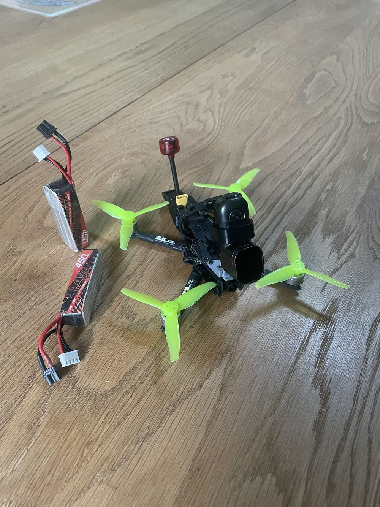
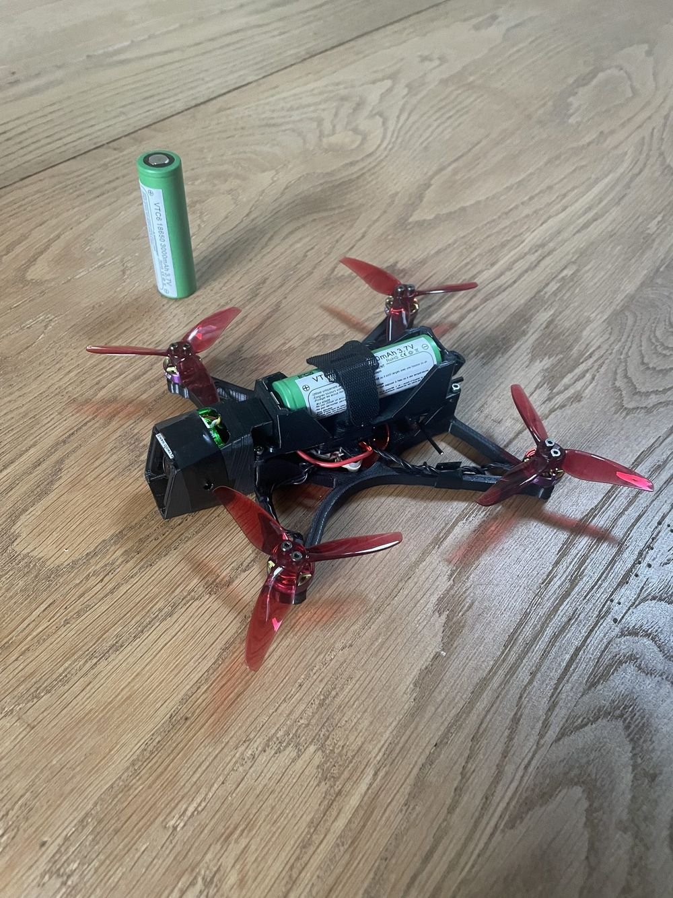
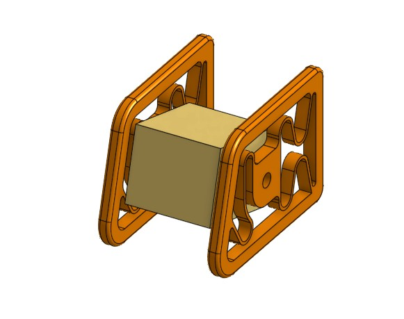
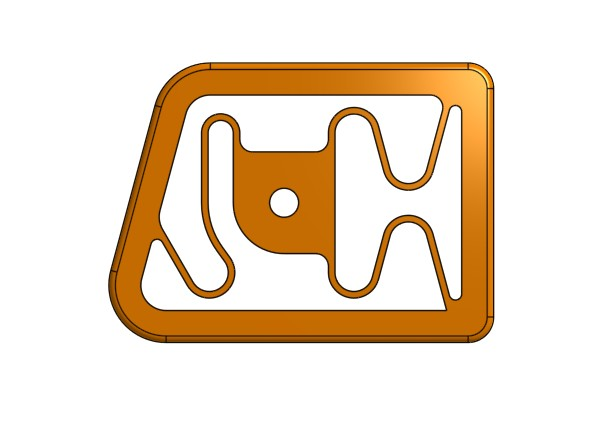
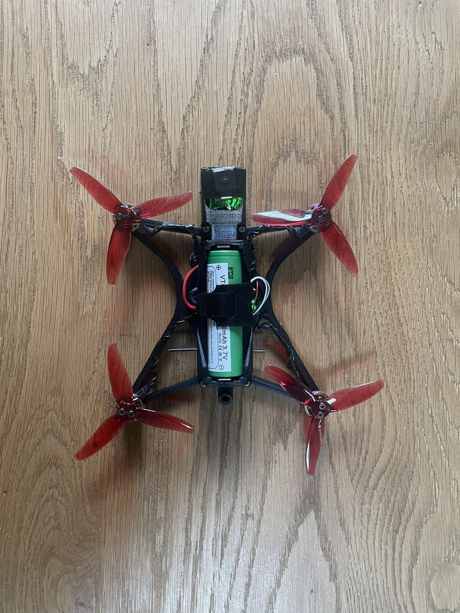
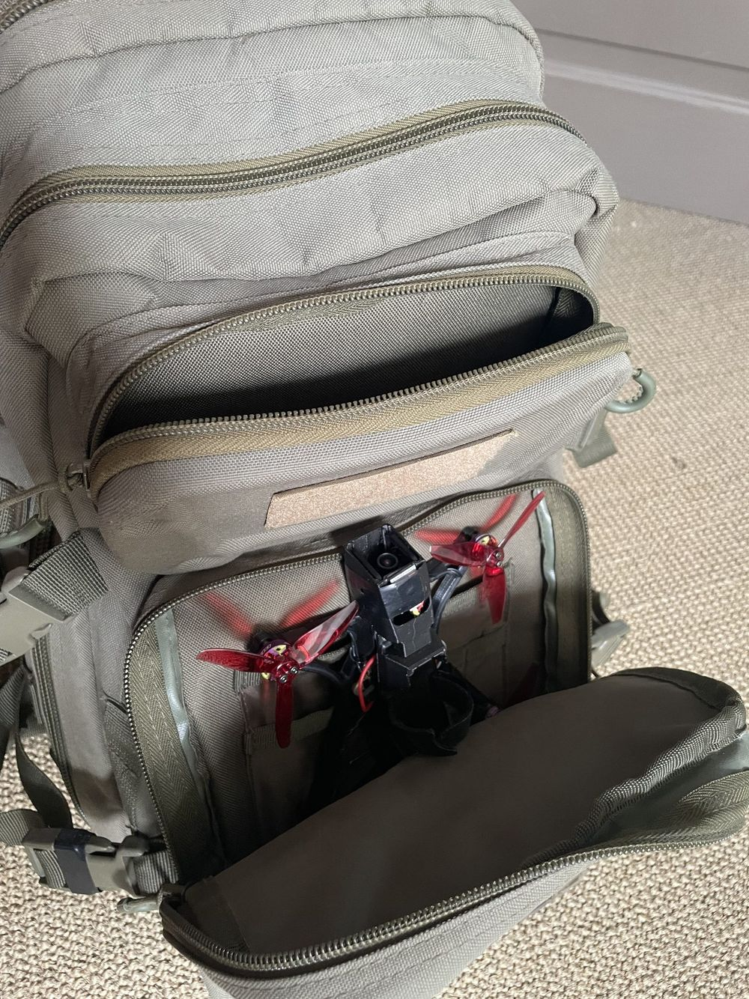
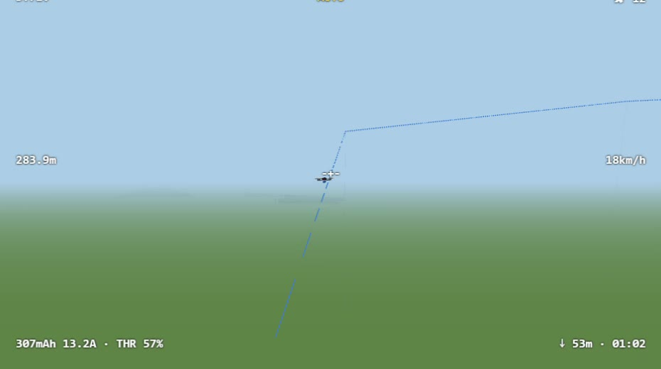
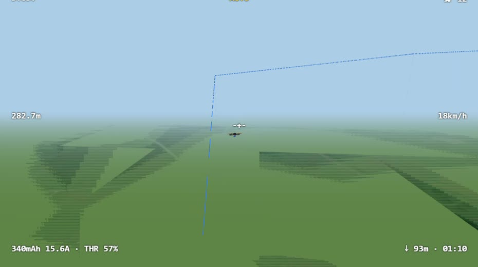

A 130 g, 3-inch FPV drone that flies 10 minutes on a single Li-ion 18650 cell, streams 1080p digital video and follows GPS waypoints.
I designed it to film my friends in the mountains and to reach a stretch of coast where take-off is forbidden. Everything is built in: camera, GPS and video link fit inside a 3D-printed frame that goes in a backpack.
This project started from two failures with my previous setup: a 3S BetaFPV Baby Ape Pro V3 with a RunCam Thumb Pro W mounted on top, analog video and Fatshark HDO+ goggles.
Filming my friends skiing
I wanted drone shots of my friends in the mountains. I got some good footage, but the day showed every weakness of the setup:
Video link. Analog reception is better when the drone is above the pilot, so I stood at the bottom of the slope. I lost minutes finding my friends, and even at 1.2 W the analog transmitter struggled.
Image. The low-resolution analog camera made it hard to read the relief and the details of the snow.
Batteries. The cold made the 3S 450 mAh packs sag fast, sometimes enough to cut the video transmitter. I only had three, each good for a short flight, and they came back slightly damaged.
No GPS. Had anything gone wrong, 250 € of gear would have stayed on the mountain.
Setup. The external camera on its own mount made transport and setup tedious.

My old setup: 3S packs, analog video, and a 4K camera mounted on top.
I also wanted cinematic shots of the coast near where I live. A decree from the Conservatoire du littoral forbids take-off and landing on an 800 m strip along the shore, but flying over it is allowed (confirmed by one of their officers).
So the drone has to take off inland, cruise to the shore, film and come back: a loop of about 3.9 km. My battery and video link did not have that range, and even with a route planned on Google Maps I could not find the efficient path to the shore while flying.
Send HD digital video with real range, and record it.
Use batteries that survive a crash.
Support GPS rescue and GPS waypoint navigation.
Fit in a backpack: no external camera, every feature built in.
Each section below answers part of this list, and the results score the drone against it.
Inspirations
The concept comes from the #nanolongrange trend: small, light quads that trade punch for flight time and range. Dave_C FPV started it with the Rekon3 and Rekon35, and Mediocre Nerd refined it once cheap digital video systems reached the market. These four videos shaped my choices:
Energy = nominal voltage × capacity, from the manufacturers' figures.
Discharge has caught up. Li-ion cells used to be too weak for FPV. The VTC6 now delivers 15 A continuous, 30 A with a thermal cut-off, which covers a 3-inch 1S quad.
Electronics have caught up too. Recent 1S flight controllers keep working down to 2.5 V, so most of the cell's capacity is usable.
Why not a 21700? It has the same energy density, so the extra 23 g mostly buys more mass to carry: a small gain in flight time for worse handling.
Why not 2S? Feasible, and the next step. One cell keeps the build and the charging simple.
Durable and practical. A steel-cased cell survives crashes and the bottom of a backpack, charges on any Li-ion charger, and costs a few euros in any vape shop.
The trade-off is voltage sag: an 18650 drops more under load than a LiPo. Betaflight's sag compensation (vbat_sag_compensation = 100) keeps the drone feeling the same from a full to an empty cell.
Why 3-inch
The right size for the cell. 3-inch props are the recommended size to lift a single 18650 efficiently.
Room for everything. Enough space for a digital video transmitter and a GPS module, both inside the frame.
Still long range. Big enough to cruise efficiently and handle some wind.
Still small. It fits in a hiking backpack and weighs well under 250 g, the threshold for the EU's least restrictive drone category.
Why the Walksnail Ascent Lite+
Range. Advertised at up to 8 km in ideal conditions. I pair it with the Ascent VRX Pro receiver.
Adaptive power. It raises its transmit power only when needed, saving battery when the drone is close.
Image. Up to 1080p at 120 fps live. Fast subjects such as skiers stay sharp, though it is still below a 4K action camera.
Built tough. The 2.75 g transmitter sits in a metal case that doubles as a heat sink.
Shared view. The VRX Pro has two outputs: HDMI to my goggles to fly, and USB-C to a screen so my friends watch the live feed. It also records the video to a microSD card.
Why GPS waypoints
Deploy the drone to the shot. The drone can take off where it is allowed and fly itself to a filming site several hundred metres away, such as the coast. I take over once it is there.
GPS rescue. If the video or radio link fails, the drone flies home on its own.
The battery makes it meaningful. With 10 minutes of flight, there is enough energy left for a long way home, which a 3-minute LiPo pack would not allow.

One cell, 46.6 g, fitted lengthwise on the centre line.
Hardware
The drone costs about 200 € in parts, plus 149 $ for the ground receiver.
Ground receiver: HDMI to goggles, USB-C to a screen, DVR
149 $
I flew both two- and three-blade props. The three-blade Gemfans felt punchier in flight, so they are on the drone in every photo; I have not measured the difference.
Manufacturer masses; printed parts and wiring estimated. Total = measured take-off mass.
Mass sits where it matters: the cell, the flight controller and the video transmitter are stacked on the centre line, close to the centre of mass.
Frame and CAD
I designed the frame in OnShape around the electronics, and it took three versions to fit everything.
It prints in PLA as three main parts: the frame, the battery tray and the camera canopy.
Drag to rotate · scroll or pinch to zoom
The LHCP antenna appears in the CAD; it is not fitted yet in the photos.
The design rules:
Fit every component inside. No external camera, no loose modules.
106 × 106 mm motor base for 3-inch props.
25.5 × 25.5 mm mount for the flight controller, with a printed 20 × 20 mm adapter that stacks the video transmitter above it.
Mass on the centre line. The cell, the flight controller and the video transmitter sit close to the centre of mass, to keep the rotational inertia low.
GPS at the front, antenna at the back. Keeping them apart reduces interference from the video transmitter on the GPS.
Vibration-damped camera
The camera sits between two printed mounts that slide into the canopy. Each mount holds it through three S-shaped springs printed in the same part. They act as a low-pass filter: motor vibrations are absorbed before they reach the image, with no rubber dampers to add.

The two mounts slide into the canopy and hold the camera.

Three S-shaped springs per mount filter the vibrations.
Printing
PLA, 0.4 mm nozzle, 2 walls, 30 % gyroid infill. For an FPV frame, stiffness matters more than strength: a flexible frame vibrates, and the gyro reads those vibrations as motion. Gyroid gives stiffness in every direction (Prusa: infill patterns, MDPI study).
I have not run a finite-element analysis on this frame yet, unlike my 4K drone frame. It is on the list of next steps.

From above: cell, flight controller and transmitter on the centre line.

Everything is built in: it goes in a backpack.The cell slides into the printed tray.
Software and tuning
The drone runs Betaflight 2026.6, the first version with a GPS autopilot and a Flight Plan tab for waypoints.
I upgraded from 2025.12, which only offered GPS rescue and position hold.
Tuning for a heavy cell on 1S
RPM filtering. Bidirectional DShot300 with motor_poles = 12 (the 1203 motors have 12 magnets, not the default 14) lets the filters track each motor's real speed.
Sag compensation at 100. The quad feels the same at 4.1 V and at 3.3 V.
Thrust linearisation at 30 and dynamic idle at 4,500 rpm. Small 1S motors respond better near low throttle and do not desync on throttle chops.
PID sliders. Master multiplier 1.2 for more authority on low voltage, damping 1.1 to control the bounce of a heavy cell, feedforward 0.8 for smoother footage.
Rates for cruising. 70 °/s at centre stick, 600 °/s maximum on roll and pitch, and a hover point at 45 % throttle with 0.30 expo for smooth altitude control.
Switches and safety
Switch
Function
AUX1
Arm
AUX2
Angle (self-levelling)
AUX3
Position hold / autopilot
AUX4
GPS rescue
AUX5
Beeper, to find the drone after a crash
If the radio link is lost, the failsafe triggers GPS rescue: the drone climbs at 4.5 m/s and flies home at 5 m/s.
The drone has no compass. Betaflight learns its heading from the GPS, which needs a fast, straight nose-forward run after take-off before any GPS mode is trusted.
Waypoint altitudes are entered above sea level, not above the take-off point. I read the field's GPS altitude before each mission and add the height I want.
The simulator
Before risking the drone, I rehearsed every mission in a simulator I built, running the real Betaflight 2026.6.2 firmware against a physics model of this exact drone.
The autopilot was new and only tested in simulation by its developers, so I wanted to see how it behaves on a 130 g quad before flying it for real.
The firmware cannot tell it is not in the drone: every setting, flight mode, failsafe and the autopilot behave as on the real flight controller. I can load the drone's own configuration into it and practise with my real radio over USB.

Chase view: the drone flies the planned path (dotted line).

The same mission over satellite imagery of the field.
What it taught me before the first real flight
Heading needs a real run. With no compass, a gentle 3 m/s run was not enough for the autopilot to learn its heading. About 30° of pitch at 5 m/s or more for 2–3 s worked.
Altitudes are above sea level. A waypoint at “20 m” would have sent the drone into the ground at a field 150 m above the sea.
The final descent is unsafe. In 2026.6.2, both the LAND waypoint and the end of GPS rescue drop the drone almost straight down. I now take over above home.
A complete mission works. A three-waypoint mission at 20 m above ground flew correctly and reported complete.
While building it, I also found and fixed a crash in Betaflight's simulator build: sensor data arriving before the sensors were initialised made it crash at start-up.
The simulator is not released for now.
Field testing
In two field tests, the autopilot reached the first waypoint both times, then lost control of its altitude before the second.
Both tests flew a square of 4 waypoints at 30 m above the take-off point, in calm conditions.
Test
Mission
What happened
1
Square, fly-over waypoints, open field near home
Waypoint 1 reached after a fast climb. Heading correct. Sudden climb just before waypoint 2, twice: I stopped the mission.
2
Same square, fly-by waypoints, another field; maximum throttle limited to 1750
Waypoint 1 reached, heading correct. Before waypoint 2, a sudden drop, then a +5 m climb; a near-crash, then a crash at 2:46. The motors stopped on impact.
Test 2 at 3× speed: the autopilot flies to waypoint 1, then 2. Data panel decoded from the on-screen display recording.
What the data shows
The drone has no onboard log, but the video receiver records the on-screen display in a separate file. I wrote a Python script that decodes it frame by frame: about 7 values per second for current, voltage, stick throttle, distance from home, satellites and flight mode.
Source: AscentG0020.osd, field test 1. Autopilot periods from the flight video.
The autopilot is asking for full power, not me. During each spike, the current triples for 1 to 5 s while the throttle stick does not move. The altitude controller is overreacting. Smaller spikes also appear in position hold, which uses the same controller.
The rest is healthy. The cell never dropped below 3.54 V, and the drone kept 8 to 14 satellites. Test 1 went 185 m from home, test 2 104 m.
What the display cannot tell me is altitude, because I had not put it on screen.
Test 1, real time: a sudden climb before waypoint 2. The current jumps to 23 A while the stick stays at 52 %.
Hypotheses and next tests
Barometer disturbed by airflow. The board's barometer is uncovered; propwash and forward flight change the pressure it reads. Fix: a piece of open-cell foam over it.
Hover throttle no longer right.ap_hover_throttle came from the simulator, and the thrust curve changed in Betaflight 2026.6. Check: read the hover throttle in position hold at the start and end of a cell.
Heading error. Without a compass, a wrong learned heading makes the drone lean hard to correct, and lose altitude. Check: does the path to waypoint 2 curve?
Before the next test: add altitude and vertical speed to the on-screen display, enable radio telemetry logging, and cover the barometer.
Results
The drone fully meets three of its six requirements; range, flight time and waypoint navigation are partly met.
Requirement
Status
Where it stands
Long range
Partly
Tested to 185 m from home; the video link is advertised for kilometres, but no long-range flight yet
20 minutes of flight
Partly
10 minutes proven with 3.2 V left; about 18 minutes estimated from the measured current
HD digital video, recorded
Met
1080p live, recorded on the ground receiver, shared on a second screen
Battery that survives a crash
Met
Steel-cased Li-ion cell, through a crash in test 2
GPS rescue and waypoints
Partly
Waypoint 1 reached twice; altitude control not reliable yet
Fits in a backpack
Met
Everything built in, no external camera
The autopilot isn't there yet, but the footage already is: flown by hand, the drone films clean, stabilised 1080p.
Flight time: 20 minutes is within reach
The 10-minute flight ended with 3.2 V still in the cell, and the cell can go down to 2.5 V. The flight controller runs down to that voltage, and its built-in regulator keeps the video transmitter powered as the cell sags.
The field-test data gives a first estimate. The drone draws about 9 A on average (747 mAh in 5 minutes of test 1), so the VTC6's 3000 mAh would last about 20 minutes to empty. Keeping a safety margin above 2.8 V, about 18 minutes looks realistic.
Two checks remain: a flight to a low cell voltage, and a calibration of the current sensor against the charge put back by the charger.
What I learned
Simulate first. The simulator caught the altitude reference and heading traps before they could cost a drone.
Log what you will need. I had current but not altitude on screen; the next test will record both.
New firmware features are new. The 2026.6 autopilot works on paper and in simulation, but a light 1S quad exposes its limits.
Next steps
Fix the altitude control. Wait for a patched Betaflight release, or tune the current one myself with Claude Code, using the field-test data and the simulator.
Measure the full flight time down to a low cell voltage, to confirm the 18-to-20-minute estimate.
Print in better materials. A new printer that handles nylon-carbon for a stiffer frame, and TPU for a tougher canopy that also damps vibrations.
Try 2S on 3.5-inch props for a higher cruising speed, to reach filming locations faster. It needs a new flight controller and motors, and the electronics will be enclosed to keep snow out of the frame.